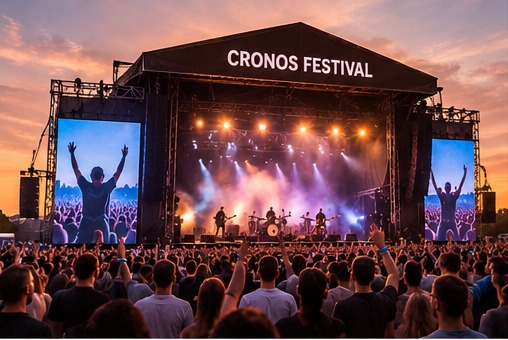
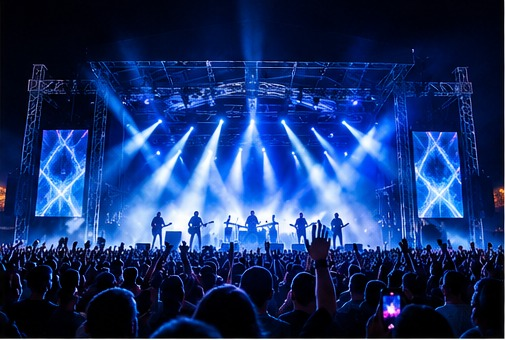
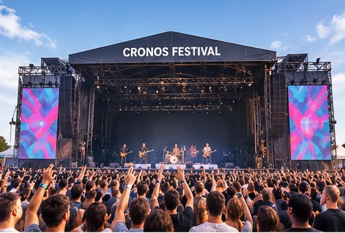
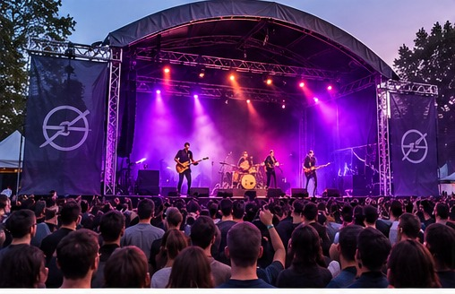
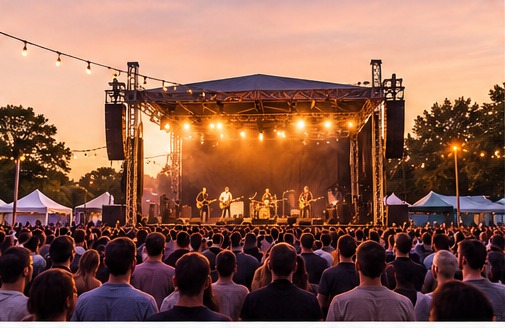
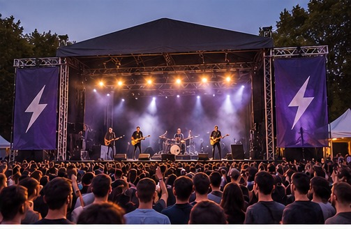
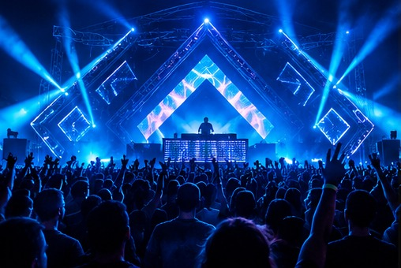
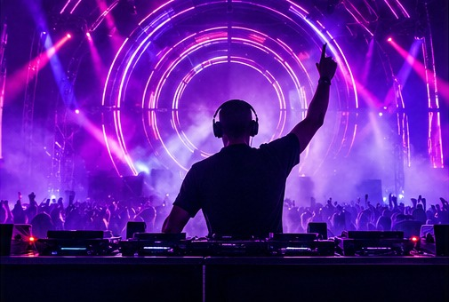
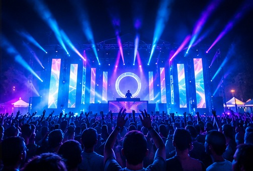

Bienvenidos a la galería oficial de CRONOS FESTIVAL. Aquí podéis descubrir los tres escenarios principales donde tendrán lugar las actuaciones.



El Escenario Principal será el espacio más grande e importante del festival. Aquí actuarán algunos de los artistas más conocidos, como Artista 1 y Artista 2.
Contará con grandes pantallas, iluminación profesional y un equipo de sonido preparado para ofrecer una experiencia inolvidable.
Volver al menú superior


El Escenario Secundario estará dedicado a descubrir nuevos talentos y disfrutar de diferentes estilos musicales. En este espacio actuarán Artista 2 y Artista 3.
Será un espacio pensado para disfrutar de la música en un ambiente más cercano y alternativo.
Volver al menú superior


El Escenario Electrónico estará dedicado a la música electrónica y a las sesiones de DJ. En él actuarán Artista 1 y Artista 3.
Tendrá iluminación LED, efectos visuales y música durante las sesiones nocturnas del festival.
Volver al menú superiorCRONOS FESTIVAL - Galería oficial de escenarios.
Volver a Inicio